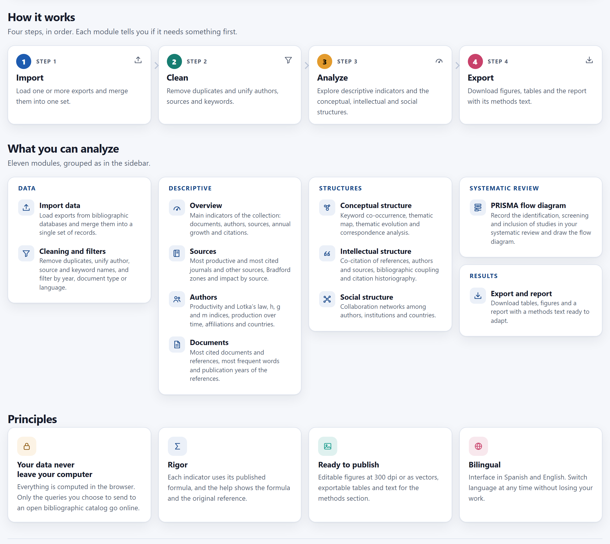
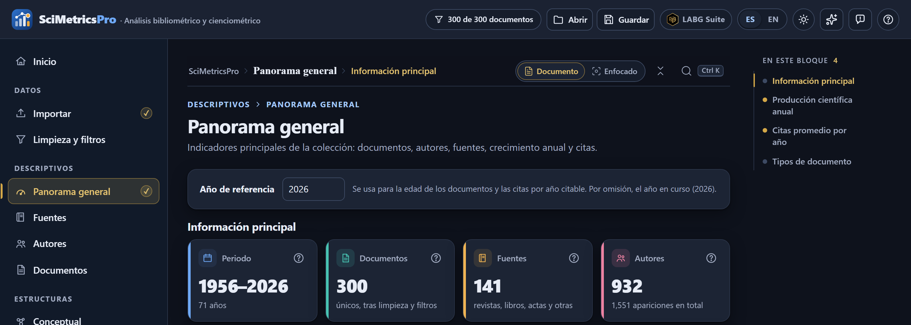
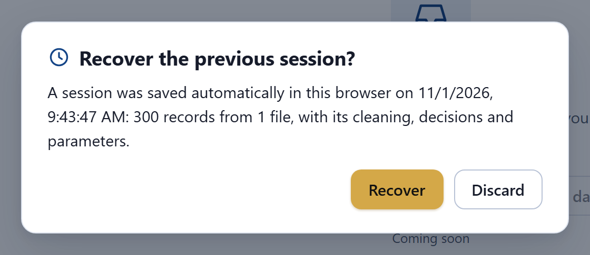
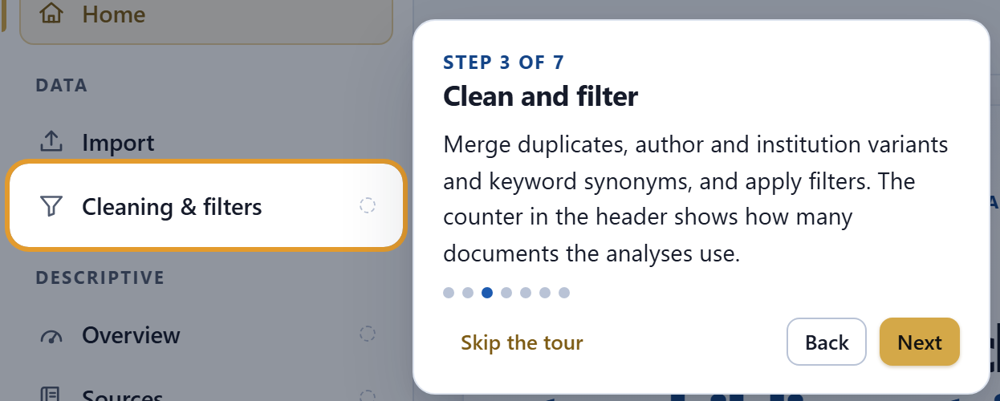
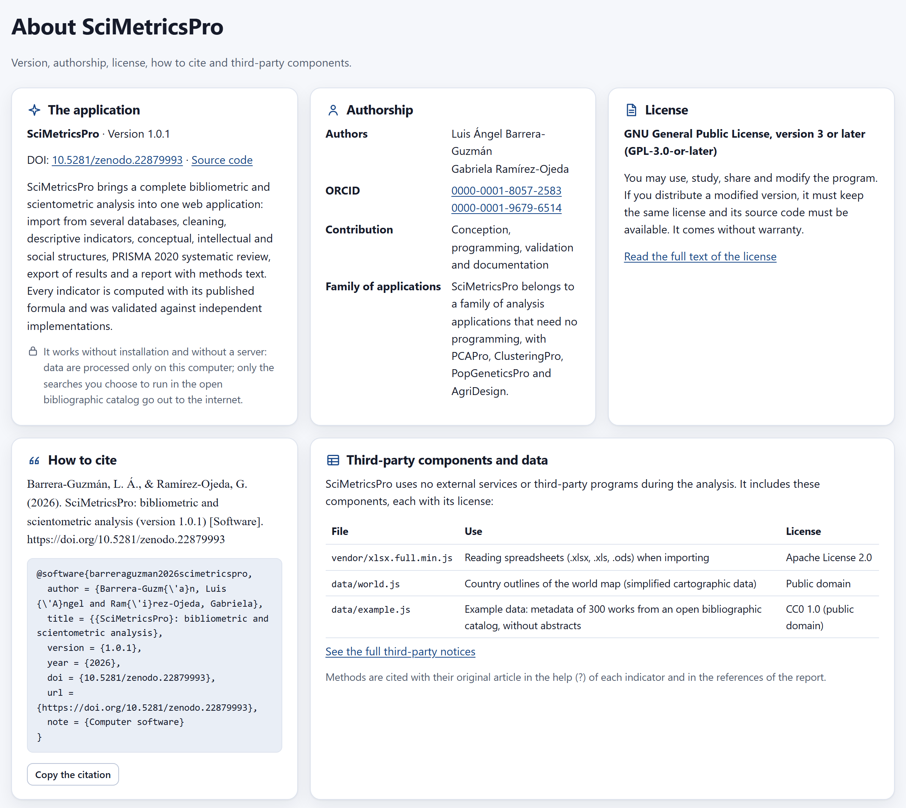
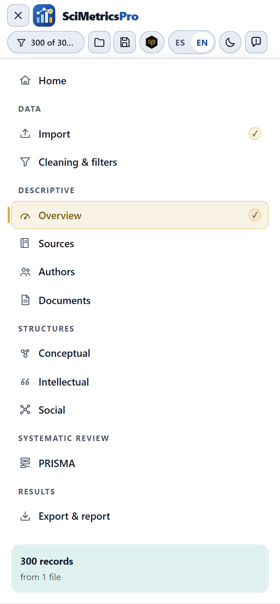

The app’s home page and what accompanies all the work: the language and the theme, the project that saves your data and decisions in a file, the automatic copy that is recovered when you come back, the guided tour, the help of each indicator, the About page and keyboard use.
The home page (Home) is the entrance: it summarizes what the app does, offers the two ways to start and shows in which order the modules are best visited. It opens when you enter, and you can return to it at any moment with Home in the sidebar or with a click on the logo in the header.
The upper part, which you saw in Figure 1.1, has the Import my data and Load example data buttons, the description of the example, the Take the guided tour link and four guarantees: everything happens in the browser, each formula carries its reference, figures come out at 300 dpi and the interface is in Spanish and English. Three more sections follow below.

1 2 3 4 5The modules can be opened even when there are no data yet. In that case they show the notice Import data first with the same two buttons as the home page, so a screen is never left empty with no way out. In the sidebar, the dotted circle next to each module reminds you that it needs data; it disappears as soon as you load them, and a gold check mark marks the modules you have already reviewed.
The header and the bar below it accompany the home page and every module (Figure 1.4); they are the same in all the apps of the LABG Suite. In the header, besides the document counter, Open, Save, the language and the theme, there are LABG Suite, which returns to the portal of the family of apps; Animations, which turns the waiting animations on or off across the suite; Report a problem, which opens in the browser a notice for the authors with your browser details already filled in, and Keyboard shortcuts (?). The navigator bar shows the path (app › module › section), the reading mode—Document, every section one after another, or Focused, one section at a time—, a button that collapses or expands every section and the app’s search box (Ctrl K), which takes you to any module, tab, section or figure. On the right, the In this block panel lists the sections of the open screen (on the home page, from How it works to Bilingual) and takes you to each one with a click.
If you have already imported files and click Load example data, the app asks “Loading the example replaces the data you have loaded. Continue?”. If you accept, it removes your files, loads the 300 works and opens the Overview. Since the example carries no author keywords, a notice at the bottom of the screen says that Index keywords was chosen as the term field. If you do not want to lose your work, save it first as a project (Section 2.3).
The controls on the right of the header change the language and the appearance of the whole app. Both changes are immediate, restart no calculation and are remembered by the browser for the next visit.

1 2 3The app opens in Spanish the first time. When you click EN, the texts of the interface, the help, the messages, the table titles and the figure labels change, including the names of countries and languages, which take the form of the chosen language. What comes from your records is not translated: titles, keywords and the names of journals and institutions are shown as the database exported them. Your data, your cleaning and your parameters are kept when you switch language.
The report with the methods text is written in Spanish or in English as you choose in Export & report›Report, without changing the language of the interface. You can work in Spanish and deliver the report in English for a journal (Chapter 13).
Until you choose, the app follows the theme of your operating system. When you click the theme button, your choice is saved and takes precedence over the system’s. Dark mode is for working on screen; figures are always downloaded with White background, unless you choose Transparent (PNG) in the figure bar, so the theme does not affect what you publish.
A project is a file with all your work: the imported records and every decision you made about them. It serves to continue another day, to take the work to another computer, to share it with your collaborators and to keep a record of how the results were obtained.
| Saves | Does not save |
|---|---|
| The complete imported records and the list of files, with their searches in the open catalog. | The clean set already computed: it is recomputed on opening, with the same decisions, and comes out identical. |
| The cleaning: duplicates separated by hand, author merges, institution and country aliases, synonyms, stop words, term field, filters and reference year. | The language and theme of the interface, which are preferences of whoever uses the app. |
| The decisions and reasons of the PRISMA screening and the option to analyze only the included documents. | The access key of the open catalog, which is only remembered in your browser if you tick it. |
| The parameters of each module, the open tab, the settings of each figure and the export and report options. | The original files you imported, which are never modified. |
scimetricspro_project_YYYY-MM-DD.smp.json, with the day’s date.The file is compressed. With the example data it weighs about 355 KB, while its uncompressed content takes up about 2.6 MB. It grows with large collections: with 10,000 records it is around 12 MB and saving it takes a few seconds, during which the app shows the notice Saving the project….
.smp.json file. Uncompressed projects are also accepted.| Message | What it means |
|---|---|
| The file is not a SciMetricsPro project. | You chose another kind of file (an export, a report) or the file is damaged. Exports are loaded in Import. |
| The project was saved with a newer version (…). | Whoever saved it uses a later version of the app. Update your copy of the program. |
| The project could not be opened: … | Another problem reading the file; the text after the colon gives the detail. |
A bibliometric study is reproducible when someone else can start from the same records, apply the same decisions and arrive at the same numbers. That is why the project does not save finished tables or figures: it saves the starting data and every decision, and the app redoes everything on opening. A practical advantage is that nothing is frozen: a merged duplicate can be separated, a filter can be removed and a synonym can be corrected even if the project comes from another computer.
The project includes the records as you exported them, with abstracts, keywords and references. Subscription databases often limit the redistribution of that content. Share the project with the people working with you on the study; to publish your data, use the results tables or the list of documents exported in Chapter 13, and check the terms of use of each database.
Besides the project you save yourself, the app saves by itself a copy of the session in your browser’s storage. If you close the tab by accident, the computer shuts down or the browser restarts, when you open SciMetricsPro again you will be able to recover the work.

1 2 3 4While the question is open the app saves nothing, so as not to erase the copy before you decide. If instead of answering you import other files or load the example, the question closes and the new work replaces the previous copy. Removing all the files in Import (Remove all) also deletes the copy.
| If you need to… | use… |
|---|---|
| continue tomorrow on the same computer | the automatic copy; just click Recover. |
| work on another computer or in another browser | a project saved with Save. |
| share the work or deliver it with a paper or a thesis | a project, with name and date, together with the report. |
| keep how the study was before a big change (new filters, another search) | one project per stage: the automatic copy only keeps the last session. |
The automatic copy is a safety net, not a backup: clearing the browsing data or using a private window removes it.
The first time you open the app in a browser, a seven-step tour starts that points out the main parts. You can follow it, go back or skip it at any moment, and repeat it whenever you want with Take the guided tour on the home page.

1 2 3 4 5| Step | Title | What it points out |
|---|---|---|
| 1 | Welcome to SciMetricsPro | The app in general and the privacy of the data. |
| 2 | Import your records | Import: several databases at once, the open catalog and the example. |
| 3 | Clean and filter | Cleaning & filters and the header counter. |
| 4 | Analyze | The descriptive modules, the structures and the ? button of each indicator. |
| 5 | Systematic review | Screening with the keyboard and the PRISMA 2020 diagram. |
| 6 | Export and write | Figures, tables, networks, the ZIP package and the report. |
| 7 | Save your work | The Save button, the automatic copy, the language and the theme. |
With the keyboard, → moves forward, ← goes back and Esc closes the tour. On narrow screens, the steps that point at a module first open the sidebar menu.
The ? button accompanies the indicator cards, the figures, the tables, the parameter groups of the networks and the export options. Its window, which you saw in Figure 1.6, explains what the indicator measures, gives its formula with the meaning of each symbol, says how to interpret it and cites the original article of the method. On the Import, Cleaning and Export screens, which compute no published indicators, the help explains the rule the app applies.
Confirmations (300 example records were loaded.), warnings and errors appear for a few seconds at the bottom of the screen, in plain language and in the active language. Errors explain what happened and, when possible, what to do; there is no need to open any console.
The About page, at the end of the sidebar and in the page footer, gathers the formal details of the program: version, authorship, license, how to cite it and third-party components.

1 2 3 4 5 6 7SciMetricsPro is distributed under the GNU General Public License, version 3 or later. You may use the program for any purpose, study how it works, share it and modify it. If you distribute a modified version, it must keep the same license and its code must be available. The program comes without warranty. The third-party components keep their own licenses: the spreadsheet reader (Apache 2.0), the country outlines (public domain) and the example data (CC0 1.0).
Cite the version with which you obtained your results. The report of Chapter 13 writes the sentence for you, with the version and the year; in English it reads: “Indicators, networks and figures were computed with SciMetricsPro [version] (Barrera-Guzmán & Ramírez-Ojeda, [year]), which applies the published formula of each method in the browser”, and it adds the full reference of the program to the reference list, together with the articles of the methods you used.
The whole app can be used without a mouse. The keyboard focus is always visible, windows keep it while they are open and figures carry a name that screen readers read out.
| Keys | Where | What they do |
|---|---|---|
| Tab · Shift+Tab | The whole app | Move to the next or previous control. The first Tab shows the Skip to content link. |
| Ctrl+K | The whole app | Opens the app’s search box: modules, tabs, sections, figures and actions such as switching the theme. |
| Alt+← → | The whole app | Previous or next module; in Focused mode, previous or next section. |
| ? | Outside a text field | Opens the Keyboard shortcuts window. |
| Enter · Space | Buttons, checkboxes, cards | Activate the control with the focus. |
| ← → | Tabs of a module | Switch to the previous or next tab. |
| Esc | Help, tour, menu | Close the help window, the guided tour or the menu on narrow screens. |
| ← → · Esc | Guided tour | Previous or next step; close. |
| + − 0 · arrows · Esc | Interactive network with the focus | Zoom in, zoom out, fit; move the drawing; clear the selection. |
| Enter | Search box of a network | Searches for and selects the typed term. |
| I E D U · ← → | PRISMA screening | Include, exclude, doubtful, undo; previous or next document (Chapter 12). |

1 2 3Below 900 pixels wide the sidebar turns into a menu opened with the button in the header, and the header buttons show only their icon. Below 760 pixels the header takes two lines: on top, the menu button, the logo and the name; below, the tools. The app works the same on a tablet or a phone, although networks and large tables are best used on a wide screen.
All screens were checked in light and dark mode: every button and every field has a name, images have alternative text, figures are announced with their title and texts meet the minimum contrast recommended for reading. If you use a screen reader, the table of each figure (Data button) gives the same numbers in a format that can be traversed cell by cell.
With the app now familiar, the next chapter begins the work with the data: how to turn your research idea into search strings, what to export from each database and how to import the files.